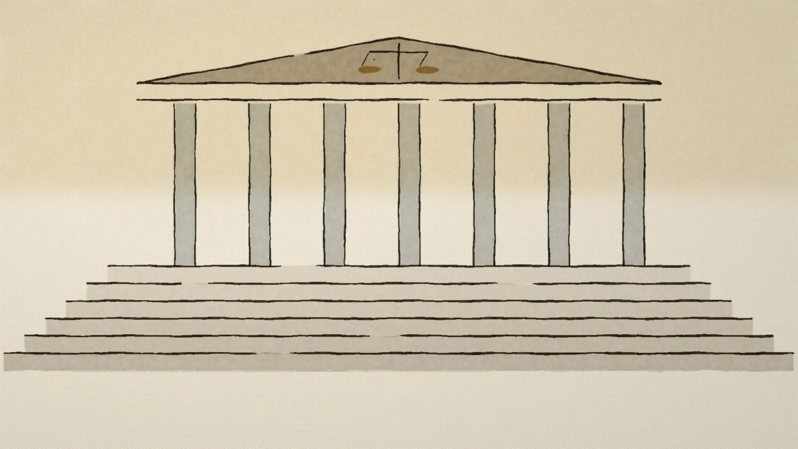

If you’re arrested, or your rights are violated
Lesson 8 of 8

The 24 hours
Remember Otieno on the dark street in Lesson 1? This time the officer doesn’t take a bribe. He arrests him.
What happens next is not up to the officer’s mood. The Constitution has a checklist, and every item on it is Otieno’s.
If you are arrested: your checklist (Art 49)
You have the right:
- To be told promptly, in a language you understand, why you’re being arrested, that you have the right to remain silent, and what happens if you don’t stay silent (49(1)(a)).
- To remain silent (49(1)(b)).
- To communicate with a lawyer and other people whose help you need, for example family (49(1)(c)).
- Not to be forced to confess or admit anything that could be used against you (49(1)(d)).
- To be kept apart from people already serving a sentence (49(1)(e)).
- To be brought before a court as soon as reasonably possible, and not later than 24 hours after arrest. If the 24 hours end at night, on a weekend or a public holiday, then by the end of the next court day (49(1)(f)).
- At your first court appearance, to be charged, told why you’re still being held, or released (49(1)(g)).
- To be released on bond or bail, on reasonable conditions, unless there are compelling reasons not to (49(1)(h)).
And: you can’t be held in custody for an offence punishable only by a fine, or by six months in prison or less (49(2)).
Never, under any circumstances: torture, beating, or cruel and degrading treatment (Art 29). Freedom from torture is one of the four rights that can never be limited, not even in an emergency (Art 25).
Your phone and home: nobody may search you, your home or your property, or read your communications, without a lawful reason (Art 31).
Children may be detained only as a last resort, for the shortest time, and separately from adults (Art 53(1)(f)).
If you’re charged: a fair trial (Art 50)
You are presumed innocent until proven guilty (50(2)(a)). You have the right to be told the charge in enough detail to answer it, to have time to prepare, to a lawyer of your choice, to a lawyer at State expense if “substantial injustice” would otherwise result, to remain silent at the trial, to see the prosecution’s evidence in advance, to a free interpreter, and to appeal (50(2)).
Evidence obtained by violating your rights must be excluded if using it would make the trial unfair (50(4)).
If you’re held and nobody knows where: habeas corpus
A person detained keeps all their rights, except those that clearly can’t work in detention (Art 51(1)). Anyone held has the right to an order of habeas corpus (Art 51(2)). That is a High Court order to the people holding someone: bring them before the court. Family, friends or an organisation can apply on the person’s behalf (Art 22(2)). This right can never be limited (Art 25(d)).
A case that shows why this matters
In April 2015, a boda boda rider, Josephat Mwenda, was shot by a police officer and complained to IPOA. Human rights lawyer Willie Kimani took up his case. On 23 June 2016, Kimani, Mwenda and their taxi driver, Joseph Muiruri, were abducted after leaving the Mavoko law courts. Their bodies were found in a river a week later.
On 22 July 2022 the High Court convicted three police officers and a police informer of their murder. They were sentenced on 3 February 2023 (reported by Al Jazeera and Citizen Digital). One officer was acquitted.
The men accused of killing them got everything the victims were denied: lawyers, time, a judge, and the presumption of innocence. That isn’t a weakness of the Constitution. It is the Constitution. The rules are for everyone, and that’s exactly why they protect you.
If any of your rights is violated
You have three main routes. You can use more than one.
Route 1: complain to a commission (free)
| Who violated your right | Complain to |
|---|---|
| A police officer: beating, shooting, unlawful arrest, a bribe, a death in custody | IPOA: toll free 1559 |
| Anyone: any right in the Bill of Rights | KNCHR: SMS 22359, complaint@knchr.org. Every person has the right to complain to it (Art 59(3)) |
| A government office: delay, abuse of power, unfair treatment | Ombudsman (CAJ): toll free 0800 221 349 |
| Discrimination (sex, disability, age and other grounds) | NGEC: toll free 0800 720 187 |
| A public officer asking for a bribe | EACC: toll free 1551 |
Route 2: go to court
- Every person can go to court claiming a right has been denied, violated, infringed or threatened (Art 22(1)).
- You can do it for yourself, for someone who can’t act for themselves, for a group, or in the public interest (Art 22(2)).
- No fee may be charged to start the case, formalities must be kept to a minimum, and the court may accept informal documents, even a letter (Art 22(3)).
- The High Court hears these cases (Art 23(1)). It can make a declaration of your rights, an injunction (an order to stop), a conservatory order (keeping things as they are while the case runs), compensation, a declaration that a law is invalid, and judicial review (Art 23(3)).
Route 3: get free legal help
The State must ensure access to justice for all, and any fee must be reasonable (Art 48). If you can’t afford a lawyer, contact the National Legal Aid Service: toll free 0800 720 640.
What you can do
If you are arrested:
- Stay calm. Don’t resist or run. Resisting can be used against you and can get you hurt.
- Ask, politely: “Why am I being arrested?” (Art 49(1)(a)).
- Say: “I want to call my family / a lawyer.” (Art 49(1)(c)).
- You may stay silent. Don’t sign or agree to anything you don’t understand (Art 49(1)(b), (d)).
- Remember names, badge numbers, the station, and the time.
- Count the hours. You must see a court within 24 hours, or by the end of the next court day (Art 49(1)(f)).
- Ask for bail or bond at your first court appearance (Art 49(1)(h)).
If someone you know is arrested:
- Find out which station. Go there. Ask for the Occurrence Book (OB) entry.
- If you can’t find them, or they’re held past 24 hours, call a lawyer or NLAS about a habeas corpus application, and report to IPOA (1559) and KNCHR (SMS 22359).
If your rights are violated:
- Write it down the same day: what happened, when, where, who, and witnesses. Keep medical records and photos.
- Complain to the right commission (table above). Keep the reference number.
- Go to court if needed. It’s your right, and starting the case is free.
Where to go
| If… | Go to |
|---|---|
| A police officer abused you or someone else | IPOA: toll free 1559 (24 hours), complaints@ipoa.go.ke |
| Any right was violated | KNCHR: SMS 22359, complaint@knchr.org, report online |
| You need a lawyer and can’t afford one | National Legal Aid Service: toll free 0800 720 640, info@nlas.go.ke |
| A government office treated you unfairly | Ombudsman (CAJ): toll free 0800 221 349 |
| You want to go to court | The High Court registry nearest you (judiciary.go.ke) |
Full details are in WHERE-TO-GO.md.
Quick quiz
- You’re arrested at 4 p.m. on a Friday. By when must you see a court?
- Can the police hold you in a cell for an offence punishable only by a fine?
- Your brother was arrested and you can’t find him. What court order can you ask for?
- Does it cost money to start a case in the High Court that your rights were violated?
- Which number do you call to complain about a police officer?
Answers
- The 24 hours end on Saturday afternoon, outside court days, so by the end of the next court day: normally Monday (Art 49(1)(f)(ii)).
- No (Art 49(2)).
- Habeas corpus: an order to bring him before the court (Art 51(2), 25(d)).
- No. No fee may be charged to start the case (Art 22(3)(c)).
- IPOA, toll free 1559.